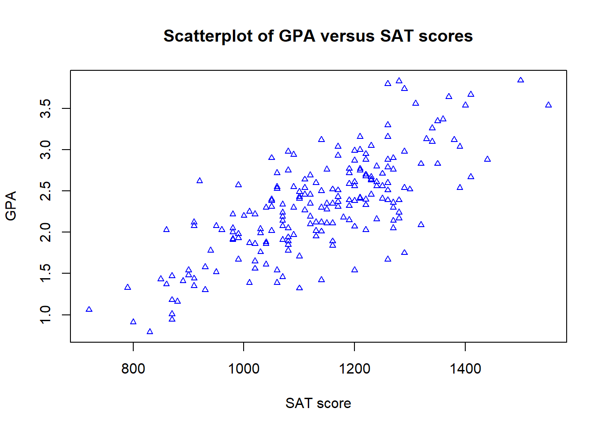
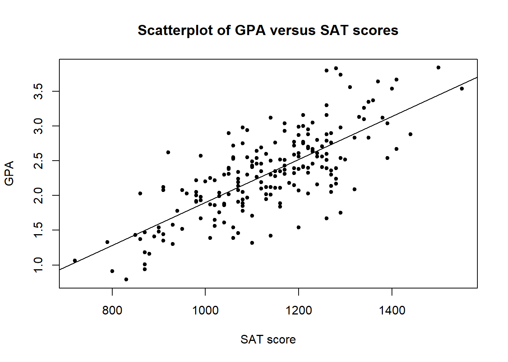

2 Example 1: Simple linear regression
The admissions committee of a comprehensive state university selected at random the records of 200 second-semester freshmen. The results, first-semester college GPA and SAT scores, are stored in the data set Grades in the package PASWR. The admissions committee wants to study the relationship between first-semester college grade point average (gpa) and scholastic aptitude test (sat) scores.
To open this data file, type:
This will assign the data to the object Grades.
A spreadsheet of the data can be viewed by typing:
but note that you will need to close this window before trying to excute any further commands. The spreadsheet can also be viewed by clicking on the GRADES object in the Workspace (top right of the screen).
2.1 Creating scatterplots
The relationship between gpa and sat scores can be examined by using a scatterplot.
This code will produce the basic scatterplot of gpa (y-axis) against sat (x-axis):
Figure 2.1: Scatterplot of gpa versus sat.
There are several options for personalising plots. First of all, you should add sensible axis labels to the plot and a main title. For example, by typing:
plot(gpa ~ sat, data = Grades, xlab = "SAT score", ylab = "GPA", main="Scatterplot of GPA versus SAT scores")
Figure 2.2: Scatterplot of gpa versus sat with annotated axis labels.
You can also edit the points by changing the symbol type, size and colour, such as
plot(gpa ~ sat, data = Grades, xlab = "SAT score", ylab = "GPA", main = "Scatterplot of GPA versus SAT scores", pch = 2, cex = 0.7, col = "blue")
The plotting character is determined by the pch argument, the size of the plotted characters by cex, and the colour by the col argument.
DISCUSSION: Looking at your plot, what can we say about the relationship between gpa and sat?
- Is the relationship linear or non-linear?
- Is the relationship positive or negative?
- How strong is the relationship?
2.2 Sample correlation coefficient
From the scatterplot, we can see a linear relationship between gpa and sat. To further assess the strength of linear relationship, sample correlation coefficient \(r\) may be calculated.
Let's first calculate \(r\) by using R as a calculator:
x <- Grades$sat
y <- Grades$gpa
x_mean <- mean(x)
y_mean <- mean(y)
r <- sum((x-x_mean) * (y-y_mean)) / sqrt(sum((x-x_mean)^2)*sum((y-y_mean)^2))
r## [1] 0.7491015The correlation coefficient varies from a strong negative linear association \(r=-1\), to no LINEAR association \(r=0\), to a strong positive linear association \(r=1\).
QUESTION: Which of the following is the correct interpretation of the correlation coefficient?
In R we can compute the sample correlation coefficient more efficiently by using the built-in function cor():
## [1] 0.74910152.3 Fitting a linear model
To find the equation that best describes the relationship between gpa and sat, the lm (abbreviation for Linear Model) function can be used:
##
## Call:
## lm(formula = gpa ~ sat, data = Grades)
##
## Coefficients:
## (Intercept) sat
## -1.192064 0.003094This fits a simple linear regression model with the response variable gpa and the explanatory variable sat.
R output, note down the equation of the fitted line that is given: (Enter your answers to 3 decimal places.)
gpa = + sat
This is the line of best fit, describing the effect of sat on gpa.
QUESTION: Which of the following is the correct interpretation of the regression model?
QUESTION: Use R to calculate the point estimate of the change in the mean GPA when the SAT score increases by 50 points.
ANSWER =
Plot of the data including the fitted line
A plot of the data can be re-produced as before with the fitted line added using the abline command. This command uses the intercept and slope information from the fitted line saved in model.lm. This is done using:
plot(gpa ~ sat, data = Grades, xlab = "SAT score", ylab = "GPA", main = "Scatterplot of GPA versus SAT scores", pch=20)
abline(model.lm)